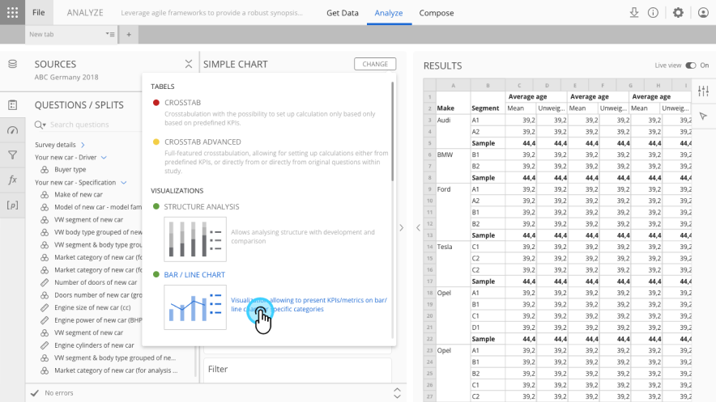
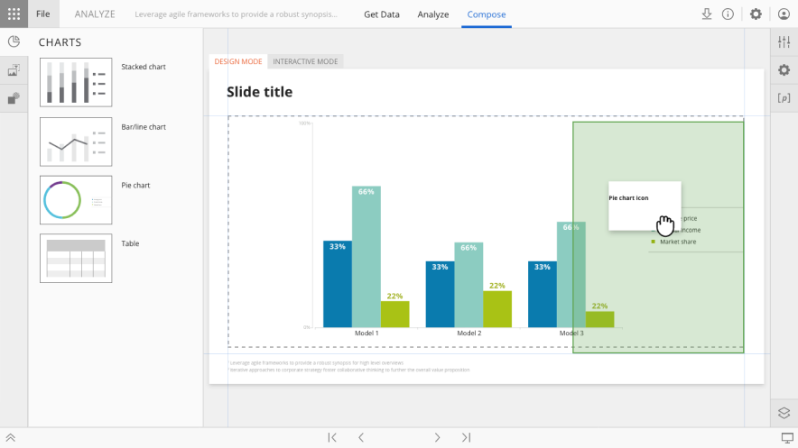
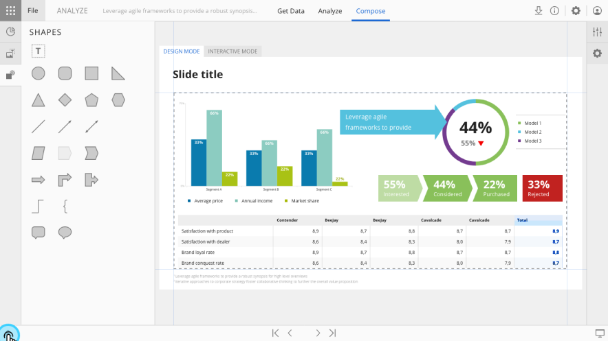

Halo Reports
Cross-tabulation, data visualisation and reporting for market research professionals

Overview
Analyze was Slideworx's core data analysis and reporting tool — a full end-to-end platform that lets research professionals take raw survey datasets and turn them into meaningful insights, interactive visualisations, and presentation-ready reports.
Now rebranded as Halo Reports and integrated into the Halo platform, it serves both report authors who build complex analyses and report consumers who explore published findings. As Head of Design, I led the design team and owned the product design across the platform's evolution.
Challenge
When I joined, Analyze already had a robust cross-tabulation module — researchers could query and slice data effectively. What was missing was a way to turn those results into something visual. There was no tool for building custom data visualisations, dashboards, or polished reports. Users had the data but no way to present it compellingly without leaving the platform.
Approach
I created the concept for and oversaw the implementation of the Compose module — a slide-based canvas where users could build complex data visualisations, dashboards, and reports using a drag-and-drop interface.
This included designing the full set of bespoke visualisation types, theming and conditional formatting, interactive parameters, and the overall editing experience.
Beyond Compose, I led the design of multiple improvements to the existing cross-tabulation tool, including an advanced object editor and a data importing tool. I coordinated sub-team of designers focused on Reporting throughout, balancing new feature development with ongoing refinements to the core analytical workflow.
Outcome
Halo Reports became the primary analytics tool for some of the world's largest automotive brands, serving research teams across global markets.
The unified patterns and simplified editing experience are now being carried forward as these clients migrate into Halo.
What's next
We're currently developing Reports 2 — a next-generation, canvas-based reporting tool with AI-powered capabilities, designed to replace and evolve what Halo Reports started.

